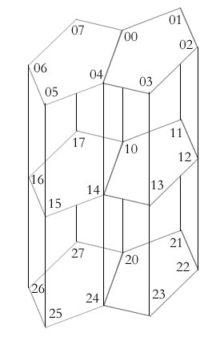

|
Yes, you are in an octal world. Here all people use Octal Number System (Base 8). They have invented all the symbols ‘0’, ‘1’, ‘2’, ‘3’, ‘4’, ‘5’, ‘6’, ‘7’. They don’t know what is ‘8’, but if you see their houses, you can find the ‘8’ shape.
Their world is a multilevel world
(not like the earth). In each level there are houses numbered from 0 to 7
and combining with the level you will get the house position. So, a house
numbered 5
in level 3
is recognized as 35, a house numbered 7 in level 0
is recognized as 07 as shown in the picture. And the levels are
numbered from 0 to 7, 10 to 17, 20
to 27, .... There are several two way roads
connecting the houses. There are two rules:
Rule 1:
In a level the ith house is connected to the jth house by a road if the absolute difference between i and j is 1 or 7. And there is a special road between house 0 and 4.
So,
there exists a road between 02 and 03, 20 and 27, 70 and 74.
But there is no road between 02 and 04, 05 and 07.
Rule 2:
If the level is different, and the difference is 1, then there is a road if two house numbers are same.
So,
there exists a road between 02 and 12, 52 and 42, 107 and 117.
But there is no road between 12 and 32, 45 and 57.
You
were visiting this weird world. Suddenly you saw that in the 32nd
house there is a sign - ‘Programmer Wanted!!!’.
You smiled a bit and went to that house immediately. There were a lot of
applicants. Like others, you were given a problem. The problem stated,
“We want to color all the roads of our
beautiful world. The roads connected to same house must have different colors.
And you will be given some roads which should be colored different. You have to
find the minimum number of colors to color them all. And you have only 6
hours.”
“The input file contains several sets
of inputs. The total number of sets will be less than 100. The description
of each set is given below:
Each
set starts with three integers L1, L2
(0 ≤ L1 ≤ L2 ≤ 1000000) and M (M ≥ 0). We want to color
all the roads from level L1
to level L2 (inclusive).
The next M lines will
contain 4
houses a, b, c, d
separated by single spaces. That means the road between (a, b) and between (c, d) should be colored different.
You can assume that all the inputs are valid and (L2 – L1) ≤ 2.
The
input will be terminated by the set where L1
> L2. And this set should not be processed.”
“For each set in the input, you should print one line containing the minimum number of colors needed.”
|
Sample Input |
Output for Sample Input |
1 1 02 3 126 27 30 340 0 1004 05 00 0100 07 04 0503 04 00 0700 01 03 0402 03 05 0600 07 02 0304 05 06 0701 02 05 06102 101 0 |
345 |
Problem
Setter: Jane Alam Jan
Special Thanks: Sohel Hafiz